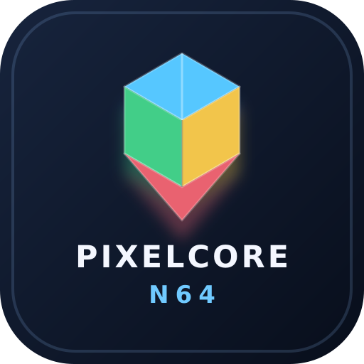

◇
Modern desktop
A Qt 6 interface designed for Linux desktops.

PixelCore - N64Part of PixelCoreMeet PixelCore - N64: an open-source Nintendo 64 emulator project for Linux, built from the ground up with modern C++ and Qt.
PixelCore - N64 is the next project in the PixelCore emulator family. Its desktop shell and initial MIPS R4300i CPU work are underway.
A Qt 6 interface designed for Linux desktops.
An original MIPS R4300i implementation, growing instruction by instruction.
Recognizes common .z64, .v64, and .n64 ROM formats.
Get the source and compile the current Linux desktop application.
For Ubuntu, Debian, and Chromebook Linux environments.
sudo apt update sudo apt install -y git build-essential cmake qt6-base-dev git clone https://github.com/kaz1071/PixelCore---N64.git cd PixelCore---N64 cmake -S . -B build -DCMAKE_BUILD_TYPE=Release cmake --build build -j"$(nproc)" ./build/pixelcore-n64
Development status: the current application can select and inspect N64 ROM headers. It does not yet execute commercial game code or render gameplay. Game ROMs are not included.